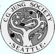

C.G. Jung Society, Seattle
Puanani Harvey, Ph.D.
Only That Which Can Destroy Itself Is Truly Alive
Lecture: Friday, April 9, 2004, 7:30 to 9:30 p.m.
Good Shepherd Center, Room 202, 4649 Sunnyside Ave. N., Seattle
$10 members, $15 nonmembers
2 CEUs
 In his analysis of the four hundred dreams and visions of the Nobel physicist, Wolfgang Pauli, Jung pronounced "the secret is...only that which can destroy itself is truly alive." He proceeded to posit in the psyche an "unreasoning instinct" beyond human control which guides the establishment of order and the dissolution of what has been established in the mysterious and ofttimes frightening journey toward individuation. Alchemy became one of the languages for these paradoxical processes by which the Self becomes discernible.
In his analysis of the four hundred dreams and visions of the Nobel physicist, Wolfgang Pauli, Jung pronounced "the secret is...only that which can destroy itself is truly alive." He proceeded to posit in the psyche an "unreasoning instinct" beyond human control which guides the establishment of order and the dissolution of what has been established in the mysterious and ofttimes frightening journey toward individuation. Alchemy became one of the languages for these paradoxical processes by which the Self becomes discernible.
"Only that which can destroy itself is truly alive" will be our primary thread as we consider Jung's collaboration with Pauli, who speculated the missing dimension of quantum theory to be the unconscious with its archetypal ordering capacities, and Jung's therapeutic work with his first analysand, Sabina Spielrein, the author of the seminal paper titled, "Destruction as a Cause of Coming into Being," which postulated the equivalent of a death instinct.
This presentation was first given in April 2001 to the American Psychological Association Psychoanalytic Division and continues to be a "work in progress."
Creative Imagination and Khidr
Workshop: Saturday, April 10, 2004, 10 a.m. to 2:30 p.m.
Good Shepherd Center, Room 202, 4649 Sunnyside Ave. N., Seattle
$30 members, $40 nonmembers, $25 student/senior members, $35 student/senior nonmembers
3.5 CEUs
To learn about preregistering for the workshop, see Preregistration Policy and Form.
The workshop will focus on contemplation of Khidr, a mystic Islamic figure
whom Jung considered illustrative of the process of transformation. We will
explore the creative imagination as perceived in esoteric Islamic traditions made
accessible by such as the poetry of Rumi, with implications for spiritual practices
of active imagination.
Puanani Harvey, Ph.D., is a practicing Jungian analyst in Sante Fe, New
Mexico, where she has served as both Training Director and President of the
New Mexico Society of Jungian Analysts. Her birth and childhood in Hawaii and
her undergraduate degrees from the University of California Berkeley in Child
Development and Art History highlight her longtime interest in cross cultural child
development and its implication for self actualization and creative unfolding.
This program has been approved for 5.5 CEUs by the Washington Chapter, National Association of
Social Workers (NASW) for Licensed Social Workers, Licensed Marriage & Family Therapists and
Licensed Mental Health Counselors. Provider number is #1975-157. The cost to receive a certificate
is as follows: 5.5 units for lecture and workshop $15; 2.0 units for the Friday lecture $10; 3.5 units for
the Saturday workshop $10.
C.G. Jung Society, Seattle home page
Updated: 29 March 2004
webmaster@jungseattle.org